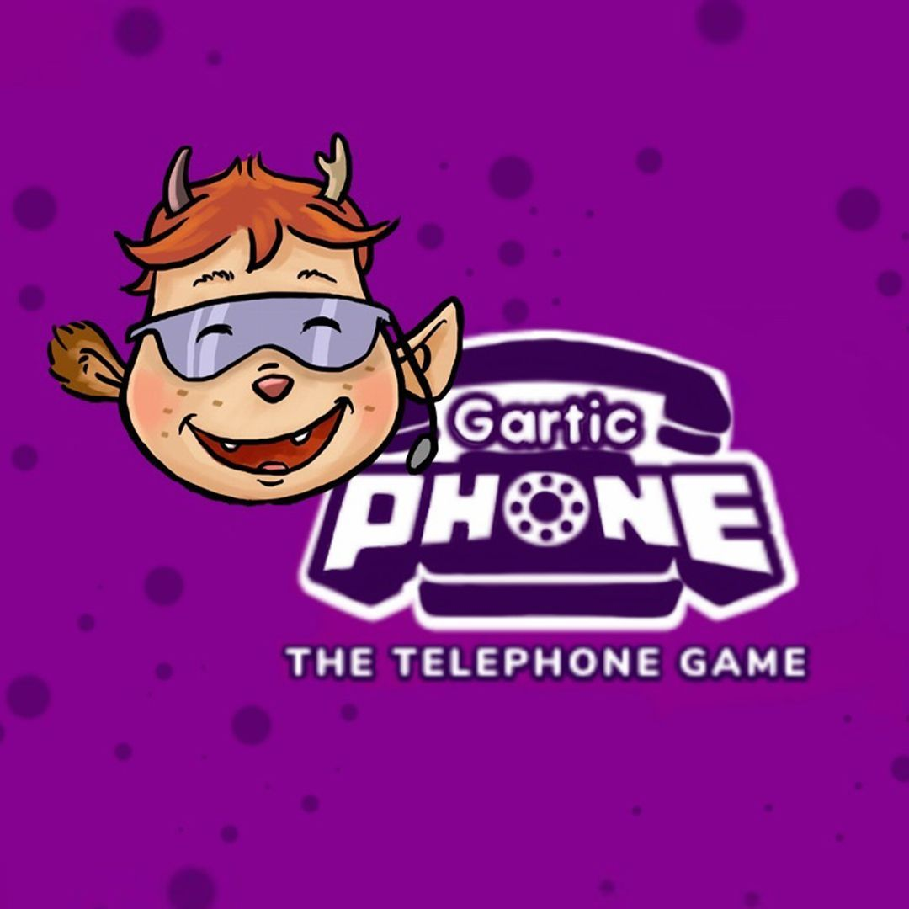

Heute stellen wir dir das Online-Spiel GarticPhone vor! Das ist ein Multiplayer-Spiel, also ein Spiel, das mit mehreren Spielern funktioniert. GarticPhone ist werbefinanziert. Das heißt, ihr könnt es kostenlos spielen, weil Werbung eingeblendet wird.
Bestimmt kennst du Flüsterpost - das Spiel, in dem man sich Wörter oder Sätze einfallen lässt und am Ende vielleicht etwas ganz anders herauskommt. Nach dem gleichen Prinzip funktioniert auch GarticPhone - eben nur digital und online!
Zuerst schreibt jeder Mitspieler einen (lustigen) Satz in das vorgegebene Textfeld. Dann werden die Sätze durchgemischt und jeder Mitspieler muss versuchen, den Satz eines anderen Mitspielenden in Form eines Bildes zu malen.
In der nächsten Runde werden nun die Bilder vermischt. Jeder Spieler bekommt dann wieder das Bild eines anderen und schreibt in das Textfeld, was er auf dem Bild sieht. So geht es hin und her bis jede Geschichte vollendet ist. Zum Schluss können sich die Spielenden die Ergebnisse zusammen ansehen.
Spielmodi:
- Kein Druck: man hat mehr Zeit zu malen.
- Geheimnis: man sieht nicht, was man schreibt oder malt.
- Speedrun: man hat nur 30 Sekunden Zeit zu malen.
- Imitation: man muss so gut wie möglich die Bilder der anderen kopieren.
- Sandwich: man beginnt mit dem Schreiben und malt so lange, bis man am Ende das letze Bild beschreiben muss.

GarticPhone ist das perfekte Spiel für langweilige Tage. Schicke deinen Freunden einfach einen Link über den Chat einer Videokonferenzplattform und ihr könnt zusammen spielen! Solltet ihr keinen Zugang zu einer Videokonferenzplattform haben, könnt ihr den Link auch einfach per E-Mail verschicken und zum Beispiel nebenbei telefonieren.
Ein neues Spiel erstellst du einfach auf der Webseite des Spiels. Hier der Zugang zur deutschen Version:
Bitte spiele nur mit deinen Freunden oder Personen, die du kennst und nicht mit Fremden aus dem Internet!
Einen ersten Eindruck vom Spiel kannst du dir in unserem kurzen Erklärvideo verschaffen.
Video:
Viel Spaß beim Ausprobieren!
Dein KABU-Team